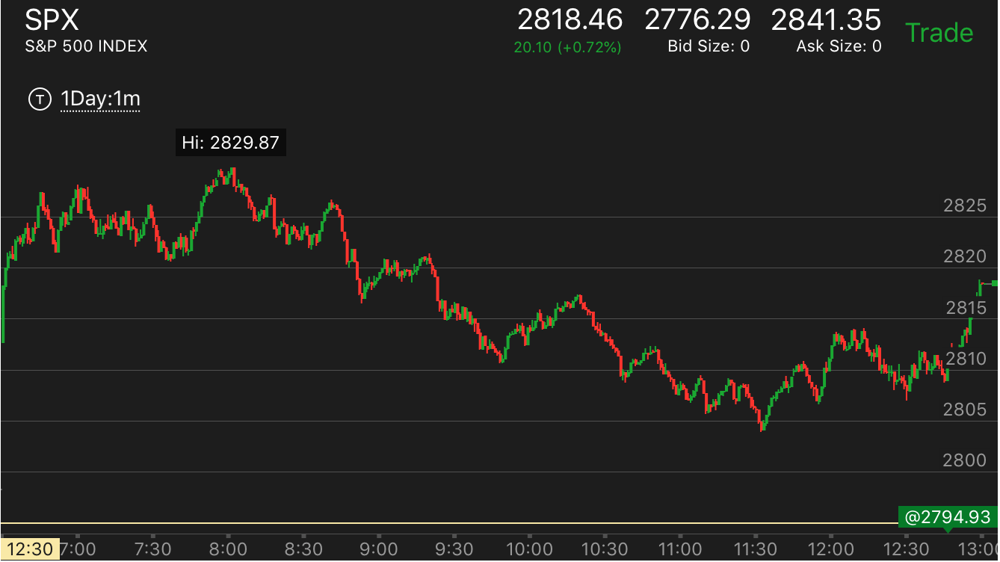

=====================================================================================================
目标价格原则
- 这个原则的关键在于，即使价格不好，也应该紧紧抓住。只要自己判断正确。除非自己确实错了。而不是打平就跑。
- 顺势操作的时候，价格不好。不要害怕，也不要看到打平的机会就逃跑。而是确定目标价格。或者看到加速走势。
要想到就是巴菲特，也经常价格很差。但是也照样赚钱。
- 关键在于是顺势操作，如果是逆势，那么很可能是错误的。这时不能坚持，而是要看到好的价格就止损或者逃跑
- 但是如果是逆势操作，但是看到出现了一个把握很大的转折走势，也应该紧紧抓住，而不是止损或者逃跑
=====================================================================================================
无偏见原则
- 大盘出现了一个走势，以为它一定是某个走势，不等它出现了确认，就提前进入。结果往往发现自己错误。
- 大盘一直没有填补真空，就以为它可能不会填补了。结果大盘最终还是填补了。
- 看到某个走势，和从前某个走势类似，以为后续走势也一样，结果忽略对具体走势的观察。一旦不一样，就会应对错误。

图示：
- 开盘出现两段上涨走势后，我以为和原来一样，很快出现一个两段大跌走势。
结果它跌幅很小。然后在小的见底走势的驱动下，创新高。反而反转了整个升势。而我以为大盘成为了升势，慌张下割肉。
- 11：30出现底部加速后，我以为和原来一样，出现了一个准备的大涨走势后， 再来一个两段走势。结果它反而先出现了两段走势。
我以为升势结束，卖掉后，做空。结果却是两段走势来回调，回调后，大涨
=====================================================================================================
仓位开启原则
- 平坦原则：要在平坦或者缓慢的地方开启仓位；
- 追赶原则：大盘在反向填补真空，或者在逆势中出现了一个走势，这时经常出现最高点只有一分钟
然后快速运动的走势。这时应该追赶。要对点数有所估计，有时候大盘运动很慢，这时真空连一个点都不到，
有时候很大，真空可能有4，5个点。要看前面大盘运动的速度和幅度。
- 第二浪追赶原则。有些走势，要么第一浪太快，要么第一浪没有发现，出现了第二浪，这时也应该去追赶操作，而不是放弃
- 追赶预测原则：有些走势，从极点开始运动很快，过会又回到极点附近。这样总的来看也不快。这时也可以跟进操作。
- 如果有目标价格，估计大盘可能在什么地方停止，而且大盘出现了5浪等走势，那么可以追赶操作，或者逆势操作

图示：
- 6：50大盘开始快速下跌，然后走平几分钟，再次下跌，反弹后，走平几分钟。
这样可以确定，它一定会超过快速下跌的开始点。但是因为更大的走势是跌势，所以可能刚刚超过一点点。
而且它的上涨方式是5浪上涨。会很快衰竭。所以可以预先放好单子。但是也可以追赶操作。
- 反方向原则：如果发现反方向有平坦的走势，那么很可能反方向才是正确的方向；
=====================================================================================================
仓位关闭原则
- 依据止损原则，看到不断扩大的损失后，止损
- 忽略小的震荡，如果有目标价格，而且目标不远，那么就一直拿住。如果目标价格很远，那么每次比较大的运动后，走平的时候，可以平仓，然后等待回撤后，
再次开仓。
=====================================================================================================
应用方法
- 相对论方法：这个方法要小心识别第一浪和第二浪。只有第二浪出现快速的上涨或者下跌，才可以应用。如果第二浪速度很慢，那么也不能用这个方法。
- 顶部或者底部加速：这个模式有大有小。刚刚开盘或者反向走势的时候，这个模式很小。只有几分钟。
而要反一个更大的走势，需要一个小时的走平。或者更大幅度的单向运动。所以一定要有耐心，等待足够的时间。
- 两段走势理论：这个走势可能有很多嵌套。它也可能从属于更大的走势。或者它本身就是最大的走势。各种情况都有。
- 主要走势理论：一个主要走势也可能是两段走势，它不容易反转，不要轻易反向操作它。要等待足够的时间，而且等它出现了顶部或者底部加速，或者永远不出现
- 真空填补和关键点： 这个和前面的几个走势相辅相成。如果要给走势不填补真空，那么会变成底部加速或者顶部加速。
=====================================================================================================
刚刚开盘后
- 我经常喜欢看到一个走势快速大幅下跌或者上涨的时候，去接它的反方向，不是损失惨重，就是错过机会。一定要解决这个问题。
- 如果看到疑似的小的两段走势结束，而且出现了非常的平的走势，持续3分钟，就可以反向操作，要注意随时割肉。
这个有可能开启一个很大的走势。要注意第一个bar，如果第二个bar和它方向相反，那么这个bar就是一个走势的启动点。

图示：开盘后，第一个bar向下，后面连续三个bar向上，那么可以认为这个是第一浪。
它立刻回调，然后走平，是回调的走势，然后它再次冲高，回到高点，然后非常的平。连续三分钟。这样可以做空。可能是个小的
跌势，也可能是个大跌。
- 判断是否有主要走势，一个主要走势建立需要很多时间，完全不必着急。可以等开盘后一个小时以上
- 如果没有主要走势，而看到一个走势很快出现第二段，那么可以在平坦的地方反向操作
- 如果一个走势不断出现了缓慢的更高点或者更低点，而且每次都回到前面的真空回调点，那么可以跟进操作。
- 如果一个操作是逆着方向来操作的，那么一定要等它走平后再操作。走平至少4分钟以上，而且符合某个走势。
盘中交易
- 判断是否主要走势，可以利用相对论，不断的操作主要走势，盘中也可能出现小的反转，出现两段走势的各种嵌套。
要注意是否更大的两段走势是否结束，或者主要走势是否结束。判断是否又底部或者顶部加速
- 如果是两段走势，那么观察每个走势的启动速度。判断它的结束。如果没有把握，那么就等它出现第一浪后，
回调或者走缓后操作第二浪。
最后90分钟交易
- 这时由于吃饭或者运动，可能注意力不集中，很容易被直觉影响。如果条件不允许，那么就不要操作。